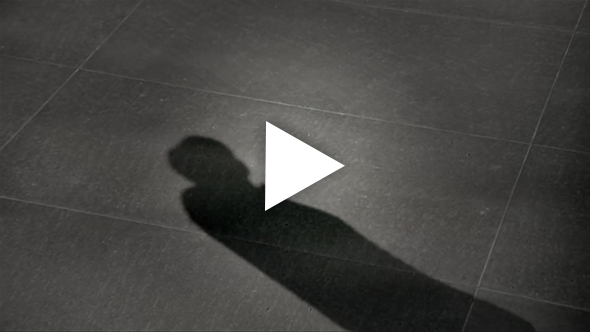
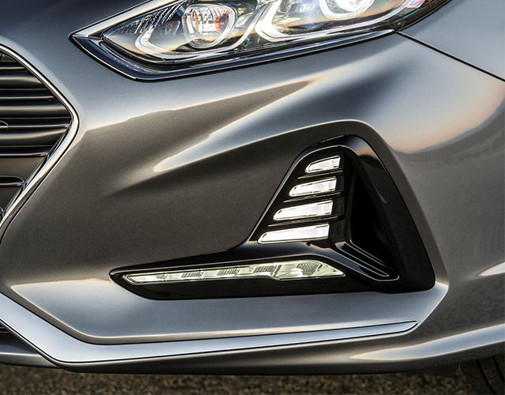
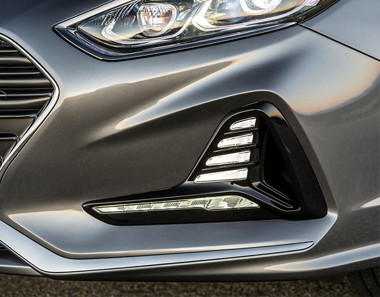

Exterior
Introducing New Sonata for lifestyle changes.

Introducing New Sonata for lifestyle changes.
Introducing New Sonata for lifestyle changes.
Cascading grille
Chrome garnish
Hood
Headlamp
Chrome molding
Vertical LED DRL


 



The three-dimensionally designed cascading grille emphasizes the difference in chrome thickness between the middle and th outermost.
The lower bumper chrome garnish emphasized the effect of lowering the visual concentration and lowering the nose.
Tension and extruded engine hood volume
Slim LED headlamps with horizontal lines (by function)
A chrome surround molding that connects the upper part of the head lamp and the belt line creates a unique feeling of quality.
Vertical type DRL and air curtains are woven together to create a wider effect. DRL with positioning function
Side hood that emphasizes crisp images. The rear tailgate is raised to emphasize the sharp image.
DLO surround Chrome molding
Wheels & Tires


With DLO outer surround chrome application and C-pollar side effect change, we produced a porty side image.
18 inch alloy wheels & tires
The emblem and the integrated trunk switch and the wide car name emblem are applied to maximize the image that looks cleaner and wider.
Emblem Integrated Trunk Switch
Rear combination lamp
Rear Bumper
Rear reflector


Apply a hidden switch to the top of the emblem so that you can release the trunk conveniently while maintaining a clean rear image.
Horizontal slick and boldly designed rear lamps emphasize a sense of clean and modern sensibility.
By moving the license plate mounting position to the bottom of the bumper, we created a simple and differentiated atmosphere.
The vertical type rear reflector was applied to achieve stable stance and sporty image.